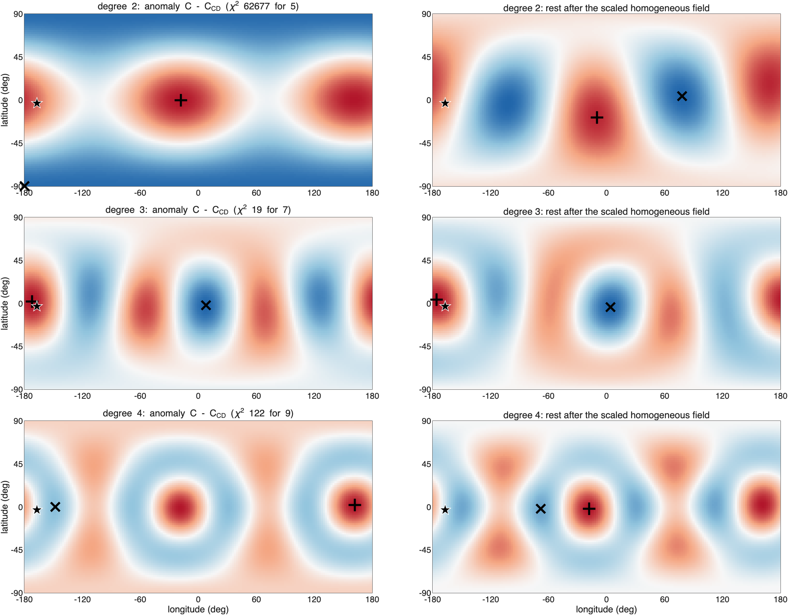
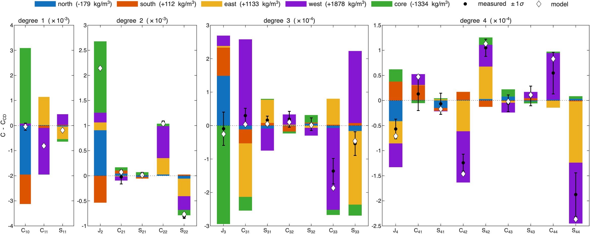
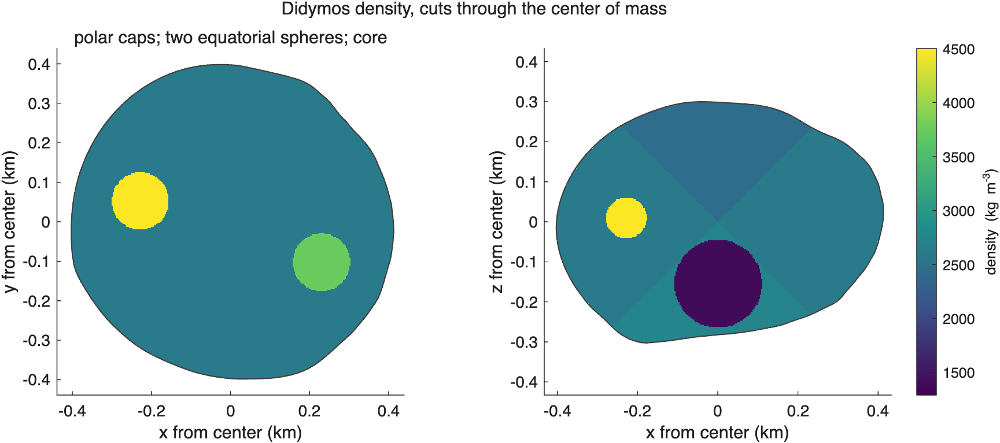
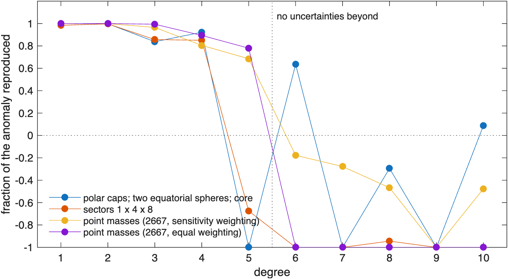
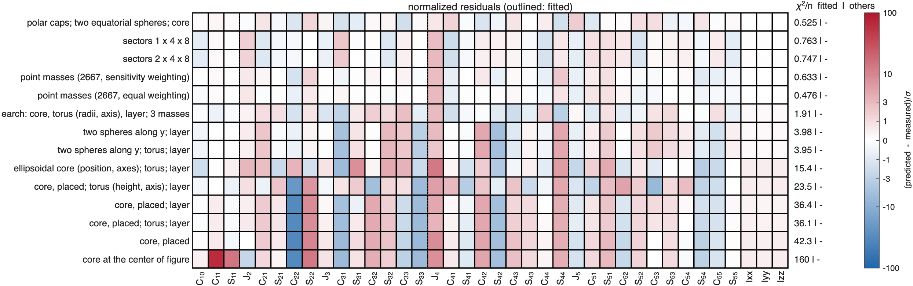
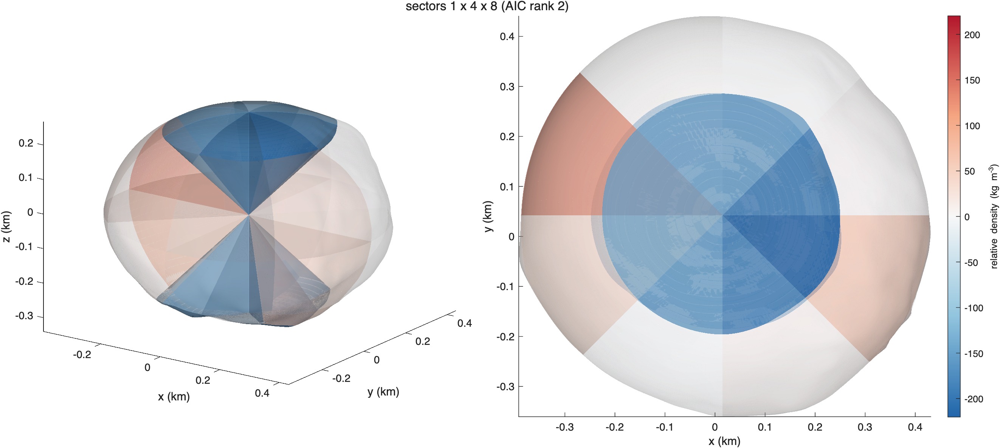
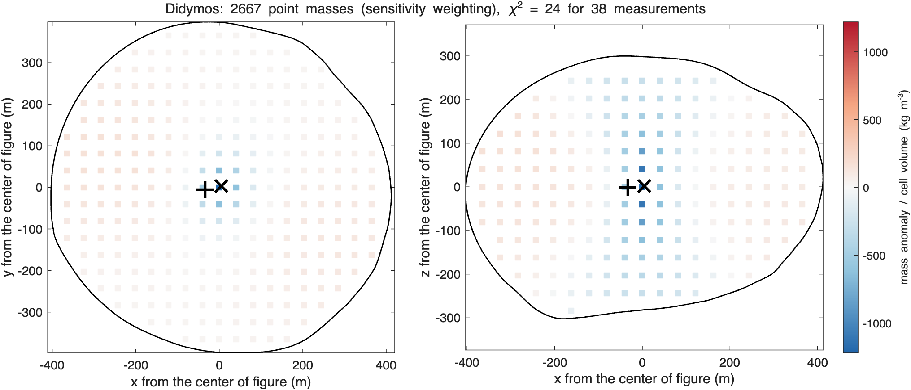
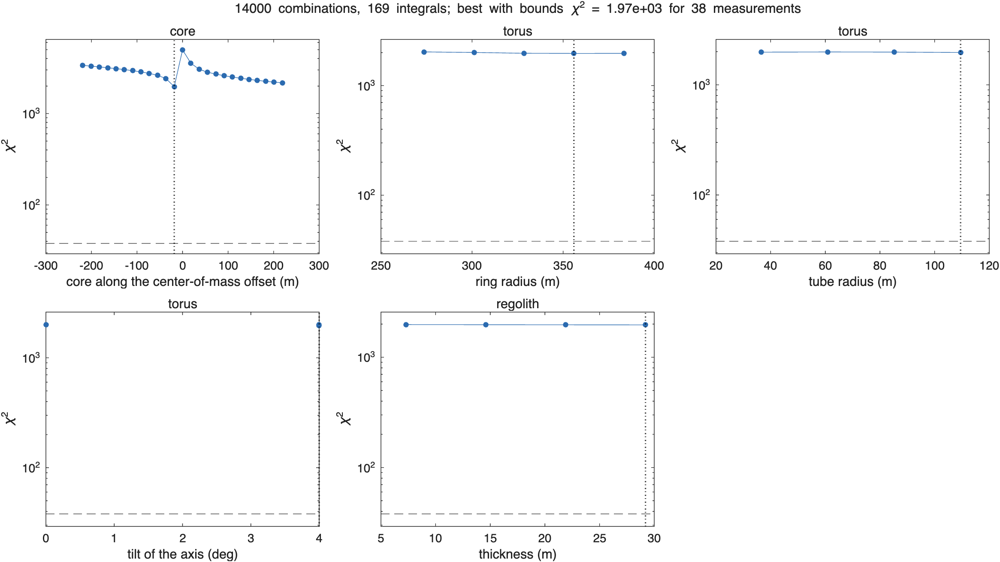

ROB-DATA1: Didymos#
Last edited October 27, 2026
In short. Mass is moved from the poles toward the equator and gathered at two opposite ends of the equator, along longitudes −19° and 161°, more at the 161° end. The best solution places a dense body at each end, 235 and 251 m from the center (+1880 and +1130 kg/m³), light polar caps and a light region 155 m below the center; it matches every coefficient to degree 5 within the uncertainties (reduced χ² 0.83, p = 0.70) with 14 parameters. Sector grids and point masses, which assume no shapes, find the same pattern but need 20 to 28 effective parameters for the same measurements. Beyond degree 5, ROB's exact values show that the dense material is more spread out than two spheres.
| Kind | Best solution of the kind | Parameters | Reduced χ² | p | AIC | Mean squared residual, degrees 1–4 |
|---|---|---|---|---|---|---|
| components | polar caps, two equatorial spheres, light core | 14.0 | 0.83 | 0.70 | 48.0 | 0.55 |
| sectors | 1 × 4 × 8 | 19.9 | 1.60 | 0.05 | 68.8 | 1.09 |
| point masses | 2,667, sensitivity weighting | 23.7 | 1.68 | 0.05 | 71.5 | 0.99 |
| search | core, torus, layer and 3 masses | 21.0 | 4.28 | 7 × 10⁻⁹ | 114.7 | 2.7 |
(How to read these pages: χ², p, effective parameters, AIC.)
1. What the measurements say#

C - C_CD 1-sigma sigma what it says
C11 -8.143e-04 1.240e-05 -65.7 center of mass toward -x
S11 -1.879e-04 1.304e-05 -14.4 center of mass toward -y
C20 -2.142e-03 8.701e-06 -246.2 J2 higher: mass toward the equator, away from the poles or the center
C22 1.067e-03 2.645e-05 40.3 mass toward the +-x ends more than +-y (elongation along x)
S22 -8.116e-04 3.934e-05 -20.6 mass toward longitudes -45 and 135 deg
C33 -1.365e-04 3.830e-05 -3.6 order 3: its pattern peaks at longitude -53 deg (and every 120 deg) where Pbar_33 is positive, at the opposite longitudes where it is negative
C42 -1.239e-04 1.686e-05 -7.3 order 2: its pattern peaks at longitude 70 deg (and every 180 deg) where Pbar_42 is positive, at the opposite longitudes where it is negative
S42 1.051e-04 1.697e-05 6.2 order 2: its pattern peaks at longitude 70 deg (and every 180 deg) where Pbar_42 is positive, at the opposite longitudes where it is negative
S44 -1.876e-04 4.348e-05 -4.3 order 4: its pattern peaks at longitude -18 deg (and every 90 deg) where Pbar_44 is positive, at the opposite longitudes where it is negative- J2 is 246σ higher than constant density: mass is moved from the poles toward the equator (or the center is lighter).
- +40σ and −21σ: the body is more elongated than its shape, toward the longitudes −45° to 0° and 135° to 180°.
- The center of mass is 0.59 m from the center of figure, toward −x (66σ) and slightly −y (14σ).
- Degrees 3 and 4 are smaller but measured: (−4σ), and (−7σ, +6σ), (−4σ).
- The moments of inertia differ by less than 1σ: for Didymos their 1σ is larger than any interior changes them.
2. Where the mass is#

Center of mass 0.59 m from the center of figure toward lat -3, lon -167 (57 sigma): the anomalous mass is on that side (or a deficit on the other).
Degree 2 (chi-square 62677 for 5): second moment of the anomaly triaxial, values 0.51, -0.02, -0.49 of their spread.
axis toward (largest): lat +0 lon 161 and lat -0 lon -19, +-2 deg
axis middle: lat +0 lon 71 and lat -0 lon -109, +-2 deg
axis away from (smallest): lat +89 lon -70 and lat -89 lon 110, +-2 deg
mass moved toward the axis through lat +0 lon 161 and lat -0 lon -19 and away from the axis through lat +89 lon -70 and lat -89 lon 110.
Rest of degree 2 (without the scaled homogeneous field): triaxial, values 0.49, 0.03, -0.51.
mass moved toward the axis through lat +18 lon 169 and lat -18 lon -11 and away from the axis through lat +4 lon 78 and lat -4 lon -102.
Each degree on the sphere (strongest excess / strongest deficit; rest after the scaled homogeneous field):
degree 2 chi2 62677 for 5: excess lat +0 lon -18, deficit lat -90 lon -180; rest: excess lat -18 lon -10, deficit lat +4 lon +78
degree 3 chi2 19 for 7: excess lat +2 lon -172, deficit lat -2 lon +8; rest: excess lat +4 lon -176, deficit lat -4 lon +4
degree 4 chi2 122 for 9: excess lat +2 lon +162, deficit lat +0 lon -148; rest: excess lat -2 lon -18, deficit lat -2 lon -68Read together:
- Degree 2 moves mass toward an axis in the equator through longitudes −19° and 161° (±2°) and away from the polar axis. Its three principal values (0.51, −0.02, −0.49) make it triaxial: denser at the two ends of an equatorial axis, lighter along the spin axis.
- Degree 1: the center of mass lies toward longitude −167°, 12° from the 161° end of that axis: that end carries more extra mass than the other.
- Degrees 3 and 4 put their strongest excess at longitudes −172° and 162°: the same end.
So the model given to the fit was: a light cap at each pole (sectors above 45° and below −45°), a dense sphere at each end of the equatorial axis, started 250 m out along −20° and 160°, and a core of free position and density for the light center.
3. The solutions compared#

- Every kind matches degrees 1 and 2 within 1–2σ: the center-of-mass offset, J2 and the elongation are what all of them reproduce first.
- The differences are in degrees 3 and 4. The model with components keeps every coefficient within 1.3σ. The sector grid and the point masses miss by 3σ; the search, whose torus and layer cannot make two equatorial lobes, misses by 4σ and by 3σ.
AIC solution kind params chi2/nu p AIC res^2 1-4 largest exact2-4 exact5-10
1 polar caps; two equatorial spheres; core components 14.0 0.831 0.7 48.0 0.547 C42 0.92 -3.97
2 sectors 1 x 4 x 8 sectors 19.9 1.6 0.05 68.8 1.09 C40 0.90 -5.98
3 sectors 2 x 4 x 8 sectors 20.4 1.61 0.05 69.1 1.07 C40 0.91 -6.20
4 point masses (2667, sensitivity weighting) point masses 23.7 1.68 0.05 71.5 0.986 C40 0.92 -0.52
5 point masses (2667, equal weighting) point masses 28.2 1.84 0.05 74.4 0.742 C40 0.96 -4.82
6 search: core, torus (radii, axis), layer; 3 masses search 21.0 4.28 7.4e-09 114.7 2.7 S44 0.47 -152.95
7 two spheres along y; layer components 9.0 5.22 1.6e-18 169.4 6.13 C42 0.11 -32.08
8 two spheres along y; torus; layer components 10.0 5.36 1.2e-18 170.1 6.1 C31 0.08 -31.91
9 ellipsoidal core (position, axes); torus; layer components 9.0 20.2 4.1e-105 604.5 24.2 C40 -0.97 -11.26
10 core, placed; torus (height, axis); layer components 9.0 30.8 5.8e-169 909.8 34 C22 -0.99 -53.25
11 core, placed; torus; layer components 6.0 42.9 1.6e-268 1385.4 57.2 C22 -0.14 -1.96
12 core, placed; layer components 5.0 41.9 2.2e-269 1391.4 57.6 C22 0.03 -3.04
13 core, placed components 4.0 47.2 2.2e-316 1614.4 66.7 C22 -0.54 -5.69
14 core at the center of figure components 1.0 165 0 6097.4 254 C11 -0.53 -5.634. The best solution: polar caps, two equatorial spheres and a light core#

component type center - cof (m) dist m lat lon drho kg/m^3 rho mass kg makes most of (sigma)
north sector lat 45..90 lon -180..180 NaN NaN NaN -179 +- 7 2443 -3.62e+09 C20 -104, C10 -14, C30 -3
south sector lat -90..-45 lon -180..180 NaN NaN NaN 112 +- 65 2734 2.2e+09 C20 +62, C10 -9, C11 -7
east sphere [ 230 -102 1] 251 0 -24 1133 +- 194 3756 1.85e+09 C11 +91, S11 -39, C20 -18
west sphere [ -228 52 10] 235 2 167 1878 +- 178 4500 3.06e+09 C11 -150, S11 +33, C22 +24
core sphere [ 0 5 -155] 155 -88 86 -1334 +- 368 1289 -7.34e+09 C20 -163, C10 +22, S11 -8
background 2622 kg/m^3 (bulk 2603); makes most of: the component's share of each coefficient in units of its 1-sigma
Why each component is where it is, and dense or light:
- The west body (+1880 kg/m³ at 235 m, longitude 167°) and the east body (+1130 kg/m³ at 251 m, longitude −24°) sit at the two ends of the axis degree 2 moves mass toward. Together they make and ; being unequal, they move the center of mass toward the west: the west body makes −150σ of , the east +91σ. The west body reaches the density bound (4500 kg/m³): the extra mass at the 161° end is more than a sphere of 73 m radius can hold.
- The light north cap (−179 kg/m³) and the light core (−1330 kg/m³, 155 m below the center) take mass away from the spin axis and make J2 higher (the cap −104σ and the core −163σ of ). They also balance each other in : the cap alone would move the center of mass south, the core alone north.
- The south cap (+112 ± 65 kg/m³) is barely resolved: below the center the light core and the cap together give a light interior under a normal surface.

5. The solutions side by side#

solution (AIC rank) moved (% M) excess at (m) deficit at (m)
1. polar caps; two equatorial spheres; core 1.70 [-35 -3 -30] [-1 5 -45]
2. sectors 1 x 4 x 8 1.14 [-45 -11 -1] [1 1 7]
4. point masses (2667, sensitivity weighting) 1.45 [-34 -5 -0] [5 4 2]
correlation of the cells of each pair:
1 2 4
1 1.00 0.44 0.51
2 0.44 1.00 0.70
4 0.51 0.70 1.00
moved: the mass above the bulk density M/V (equal to the mass below it), in 41 m cells; excess at, deficit at: where that mass is centered, from the center of figure.All three put the extra mass at the two ends of the equatorial axis degree 2 points to (−19° and 161°) and take it from along the spin axis, and all three center the excess 34 to 45 m toward −x: the 161° end carries more, as degree 1 said. They differ in how compact the extra mass is and where the missing mass is. The model with components gathers the excess into two spheres and puts the deficit in a light core 155 m below the center and a light north cap; the sector grid spreads the excess over equatorial wedges that reach the center, and the deficit over cones about both poles; the point masses spread the excess over the outer equator and put the deficit in a column along the spin axis. The sector grid and the point masses, which assume no shapes, correlate 0.70 cell by cell; each correlates about 0.5 with the model with components. The measurements fix the two equatorial ends and the lighter spin axis; how compact the dense material is they leave open, and ROB's exact values beyond degree 4 (section 6) say it is more spread out than two spheres.
6. Beyond the fitted coefficients#
model fitted to chi2/nu chi2/n fitted chi2/n others
polar caps; two equatorial spheres; core degrees 1-2 0.00397 0.000723 20.8
polar caps; two equatorial spheres; core degrees 1-3 0.226 0.0502 10
polar caps; two equatorial spheres; core degrees 1-4 0.885 0.426 0.877
polar caps; two equatorial spheres; core degrees 1-5 0.831 0.525 -
sectors 1 x 4 x 8 degrees 1-2 2.43 0.822 5.54
sectors 1 x 4 x 8 degrees 1-3 2.27 0.581 3.53
sectors 1 x 4 x 8 degrees 1-4 2.21 0.413 28.8
sectors 1 x 4 x 8 degrees 1-5 1.6 0.763 -
point masses (2667, sensitivity weighting) degrees 1-2 2.34 0.891 7.28
point masses (2667, sensitivity weighting) degrees 1-3 2.11 0.692 8.69
point masses (2667, sensitivity weighting) degrees 1-4 2 0.524 0.115
point masses (2667, sensitivity weighting) degrees 1-5 1.68 0.633 -
point masses (2667, equal weighting) degrees 1-2 2.31 0.911 20.4
point masses (2667, equal weighting) degrees 1-3 2.11 0.69 26.1
point masses (2667, equal weighting) degrees 1-4 2.17 0.431 0.259
point masses (2667, equal weighting) degrees 1-5 1.84 0.476 -
Fraction of each degree's anomaly (exact values) reproduced by the fit to every degree, 1 - |model - given|^2/|given|^2:
model 1 2 3 4 5 6 7 8 9 10
polar caps; two equatorial spheres; core 1.00 1.00 0.84 0.92 -5.91 0.63 -8.41 -0.29 -9.95 0.09
sectors 1 x 4 x 8 0.98 1.00 0.86 0.85 -0.67 -2.42 -1.22 -0.94 -6.07 -24.56
point masses (2667, sensitivity weighting) 1.00 1.00 0.97 0.80 0.69 -0.18 -0.28 -0.47 -2.40 -0.48
point masses (2667, equal weighting) 1.00 1.00 0.99 0.89 0.78 -1.68 -2.92 -5.07 -12.36 -7.67
- Fitted to degrees 1–4, the model with components predicts degree 5 at 0.88 per coefficient, the point masses at 0.12–0.26: degree 5 is measured as almost nothing (χ² 3 for 11), and both predict it within the noise.
- Against ROB's exact values, every solution reproduces 80–100% of degrees 1 to 4. At degrees 5, 7 and 9 the two compact spheres add far too much (the fraction goes to −6 to −10); the point masses with sensitivity weighting reproduce 69% of degree 5 and stay between −0.5 and 0 to degree 8. The true dense material is spread over a larger volume than two spheres; to degree 4 the two spheres describe it.
7. Details#




step chi2 dof chi2_reduced p_value components time_s
____________ ______ ___ ____________ ___________ __________ ______
"grid" 1966.1 35 56.174 0 3 337.3
"refine" 565.14 29 19.488 1.0693e-100 3 417.71
"masses (3)" 72.679 17 4.2752 7.4204e-09 6 390.01The search adds three compact masses and lowers χ² from 565 to 73, but a torus about the z-axis cannot make two lobes at the ends of an equatorial axis: it stays inconsistent (reduced χ² 4.3).